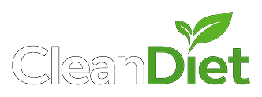

Termos de Uso
Versão 1.0 · atualizada em 4 de outubro de 2026
Ao criar uma conta no CleanDiet, você concorda com estes termos e com a Política de Privacidade. O serviço é oferecido por [NOME DO RESPONSÁVEL].
1. O que o CleanDiet é
O CleanDiet é um aplicativo de apoio à alimentação saudável. Ele mostra cardápios-base elaborados por nutricionista, com substituições de alimentos equivalentes, lista de compras e acompanhamento do dia.
2. O que o CleanDiet não é
- O app não faz consulta nutricional nem substitui o acompanhamento de um nutricionista ou médico.
- Se você está grávida ou amamentando, tem diabetes, doença renal, doença cardíaca ou hipertensão em tratamento, histórico de transtorno alimentar ou outra condição em tratamento médico, procure um profissional. Nesses casos o app não sugere cardápio.
- Em caso de mal-estar, interrompa o uso e procure atendimento.
3. Quem pode usar
Apenas maiores de 18 anos. Você é responsável por informar dados verdadeiros e por manter sua senha em segredo.
4. Uso permitido
Não é permitido usar o app para fins ilegais, tentar acessar dados de outras pessoas, sobrecarregar ou atacar o serviço, nem copiar o conteúdo dos cardápios para fins comerciais.
5. Planos pagos
Recursos pagos, quando existirem, serão cobrados pela loja de aplicativos (Google Play ou App Store), seguindo as regras de cobrança, renovação e cancelamento da própria loja.
6. Responsabilidade
Fazemos o possível para manter o serviço disponível e as informações corretas, mas o app pode ter interrupções. Os resultados dependem de cada pessoa e não são garantidos.
7. Encerramento
Você pode excluir sua conta a qualquer momento pelo app (Perfil → Excluir conta). Podemos suspender contas que violem estes termos.
8. Mudanças e foro
Avisaremos pelo app sobre mudanças importantes nestes termos. Vale a lei brasileira, e fica eleito o foro do domicílio do usuário.